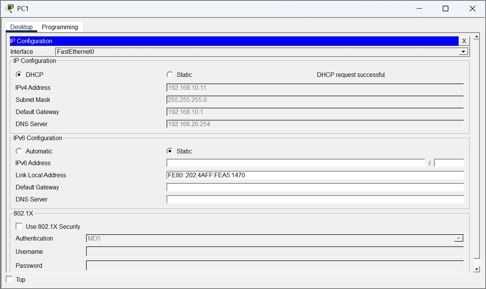

Dans le cadre de ma formation, j’ai réalisé un TP Cisco Packet Tracer portant sur la configuration du service DHCPv4.
L’objectif était d’automatiser l’attribution des paramètres IPv4 aux clients d’un réseau, en configurant un routeur Cisco comme serveur DHCP, des relais DHCP et une interface cliente DHCP.
Objectifs
Configurer un routeur comme serveur DHCPv4.
Exclure les adresses IPv4 réservées.
Créer des pools DHCP adaptés aux réseaux locaux.
Configurer le relais DHCP sur les routeurs concernés.
Configurer une interface routeur en client DHCP.
Vérifier l’attribution des adresses et la connectivité.
Environnement technique
Logiciel : Cisco Packet Tracer
Équipements : routeurs Cisco, commutateurs Cisco, postes clients et serveur DNS
Interface : CLI Cisco IOS
Technologies : DHCPv4, relais DHCP, adressage IPv4 et routage
Topologie réseau et table d'adressage
La topologie est composée de trois routeurs interconnectés (R1, R2, R3), d’un serveur DNS et de deux postes clients placés dans des réseaux locaux distincts.
La table d’adressage permet d’identifier les réseaux concernés, les interfaces utilisées et les passerelles par défaut afin d'appliquer correctement la configuration DHCP.
Étape 1 – Configuration du routeur R2 en tant que serveur DHCP
Je suis d’abord entré dans le routeur central R2 afin de le configurer comme serveur DHCP pour les réseaux locaux de R1 et R3.
J'ai commencé par exclure les dix premières adresses IP de chaque réseau (de .1 à .10) avec la commande ip dhcp excluded-address afin de les réserver pour des attributions statiques, comme les interfaces de routeurs.
Ensuite, j'ai créé deux pools DHCP nommés R1-LAN et R3-LAN. Pour chaque pool, j’ai défini l'adresse du réseau avec son masque, la passerelle par défaut correspondante et l'adresse du serveur DNS.
Étape 2 – Configuration du relais DHCP
Puisque les postes clients (PC1 et PC2) ne sont pas sur le même réseau local que le serveur DHCP (R2), j'ai dû configurer des agents de relais. Les requêtes de diffusion (broadcast) DHCP ne traversent pas les routeurs par défaut.
Sur le routeur R1, je suis entré dans la configuration de l'interface LAN (G0/0) pour appliquer la commande ip helper-address 10.1.1.2, pointant vers l'interface série de R2.
J'ai reproduit cette opération sur l'interface LAN du routeur R3 (G0/0) avec l'adresse d'assistance 10.2.2.2.
Étape 3 – Configuration des hôtes
Après avoir configuré le serveur et les relais, je suis passé sur les postes clients.
J'ai modifié les paramètres de la carte réseau de PC1 et PC2 pour qu'ils obtiennent leurs informations d'adressage IPv4 dynamiquement depuis le serveur DHCP plutôt qu'en statique.
J'ai pu constater que la requête a abouti avec succès ("DHCP request successful") et que les premières adresses disponibles après les exclusions (.11), les masques, les passerelles et le serveur DNS ont bien été attribués.

Étape 4 – Configuration du routeur R2 en tant que client DHCP
L'étape suivante consistait à simuler une connexion Internet fournie par un équipement distant (FAI) pour le routeur R2.
J'ai configuré son interface GigabitEthernet0/1 en mode client avec la commande ip address dhcp, puis je l'ai activée (no shutdown).
En utilisant la commande show ip interface brief, j'ai pu vérifier que l'interface G0/1 avait bien reçu une adresse IP dynamique (état Method DHCP), confirmant que R2 peut également agir en tant que client.
Étape 5 – Vérifications
Pour m'assurer du bon fonctionnement global de la topologie, j'ai effectué plusieurs contrôles finaux.
Sur le routeur R2, la commande show ip dhcp binding m'a permis de lister les liaisons actives et de contrôler que les adresses IPv4 (.10.11 et .30.11) étaient bien allouées aux adresses MAC respectives de PC1 et PC2.
Enfin, j'ai réalisé des tests de connectivité en envoyant des requêtes ping depuis PC1 vers PC2, puis de PC2 vers PC1. Les réponses ont toutes été reçues correctement, confirmant que le routage et l'adressage dynamique sont pleinement opérationnels.
Résultats obtenus
Routeur R2 configuré comme serveur DHCPv4.
Adresses IPv4 réservées exclues des pools DHCP.
Pools DHCP créés pour les réseaux locaux.
Passerelles et serveur DNS renseignés dans les pools.
Relais DHCP configuré sur les routeurs concernés.
Interface de R2 configurée en client DHCP.
Attribution automatique des adresses IPv4 vérifiée.
Connectivité réseau validée.
Compétences mobilisées
Gérer le patrimoine informatique
Identification des équipements, des réseaux et des paramètres d’adressage IPv4.
Répondre aux incidents et aux demandes d’assistance et d’évolution
Mise en place d’une solution DHCPv4 répondant à un besoin d’automatisation de l’adressage réseau.
Mettre à disposition des utilisateurs un service informatique
Configuration et vérification d’un service DHCPv4 permettant aux clients d’obtenir automatiquement leurs paramètres réseau.
Organiser son développement professionnel
Développement de compétences en DHCPv4, relais DHCP, adressage IPv4 et documentation de la réalisation dans le portfolio.
Bilan personnel
Ce TP m’a permis de mieux comprendre le fonctionnement du service DHCPv4 et son rôle dans l’automatisation de l’adressage réseau.
J’ai appris à créer des pools DHCP, à exclure des adresses réservées, à configurer un relais DHCP et à vérifier les adresses attribuées aux clients.
Cette réalisation est importante car DHCP est un service essentiel pour simplifier l’administration des postes clients dans une infrastructure réseau.